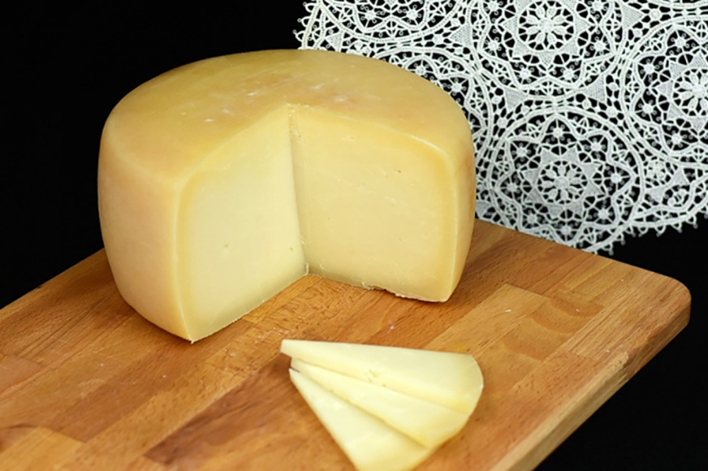

Ovčji · ZOI
Paški sir
Ekstra tvrdi, punomasni ovčji sir isključivo od mlijeka autohtone paške pramenke. Mramorne strukture, zlatno žute boje, s aromama niskog raslinja i ljekovitog bilja kao što su kadulja i vrisak. Posolica nošena burom i stogodišnja receptura obitelji Pernjak daju mu jedinstvenu aromu.
Dozrijevanjemin. 60 dana